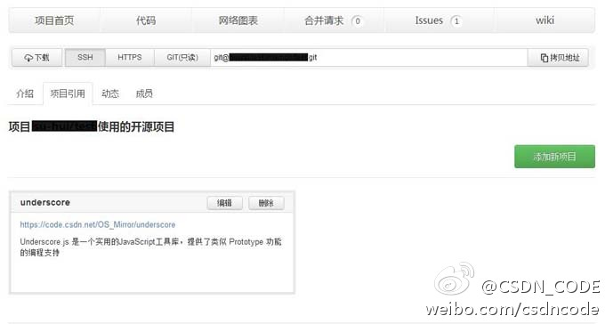

---:抱歉，作者已设置仅展示半年内微博，此微博已不可见。

Ada李力
2013-07-25


Ada李力
2013-07-25

@CSDN云计算俱乐部:
余沛（艺龙网平台总监）、刘宇（SinaEdge平台运维主管）将在8月8日CSDN云计算俱乐部下午茶跟大家畅聊“自动化运维的优化与发展”说一些他们在运维工作中遇到的那些事儿。只限20人哦，感兴趣就赶快行动哦。 CSDN.NET  网页链接
网页链接
Ada李力
2013-07-25
最近朋友说，她在一个月内听到了有四家说要做中国的GitHub。很多人做，说明开发者越来越受到重视，是好事情。但在中国做免费的代码托管，还真得耐得住寂寞。相信@CSDN_CODE 会越做越好。
@CSDN_CODE:
【CODE新增“引用项目”功能】你的项目使用了开源技术或开源框架吗？快去标注出来吧！CODE平台为项目加入了“项目引用”的功能，您可以添加引用项目的名称、链接和简介，让更多的人了解这些无私的开源技术，同时，也方便同样使用该技术的开发者与您交流！详情：网页链接 
- 
Ada李力
2013-07-25
最近听到几个人对我说现在CSDN的线下活动很多。其实和以前相比，俱乐部活动的数量并没有增加太多，别人这么感觉，大概是活动的宣传力度加大了，更广为人知了些。
Ada李力
2013-07-25
最近又有人提出做中国技术社区图谱，展示各技术领域的社区规模和成员地域分布等信息。记得程勇@MobilityThoughts 很多年前就说过要做这件事情。这件事一直没动静，说明这事儿不容易做，而且所产生的价值也不够有驱动力。
Ada李力
2013-07-25
Nod//@ZoomQuiet: #是也乎#俺也是有机会就吼,,,只是,中国技术社区的平均生命周期都忒短,而命长的,就那几个,而且跨领域的,相互也不怎么关心,最主要的创业团队的挖掘跟技术社区多数没有什么关系,,,所以不是褔矿,就没有人关怀了,,
@Ada李力:
最近又有人提出做中国技术社区图谱，展示各技术领域的社区规模和成员地域分布等信息。记得程勇@MobilityThoughts 很多年前就说过要做这件事情。这件事一直没动静，说明这事儿不容易做，而且所产生的价值也不够有驱动力。